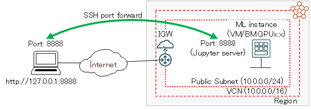
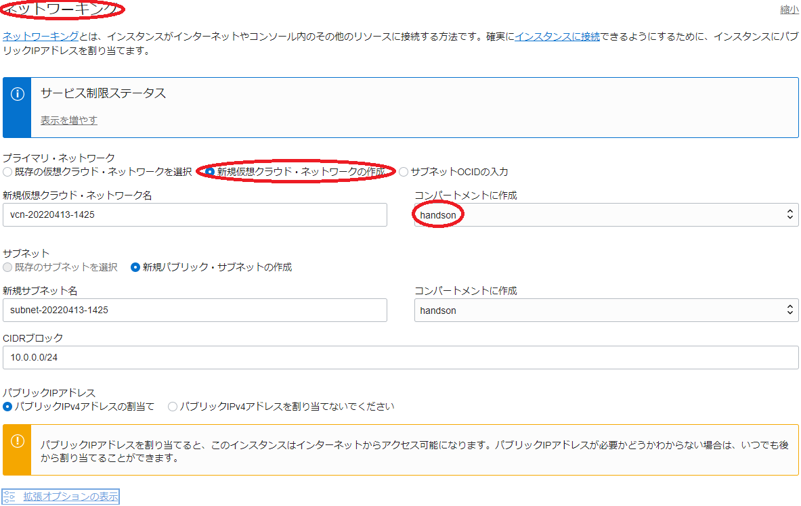
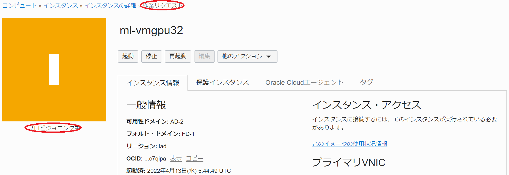
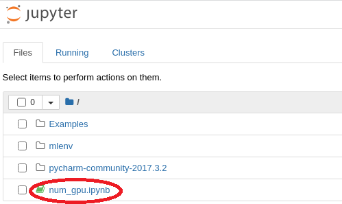
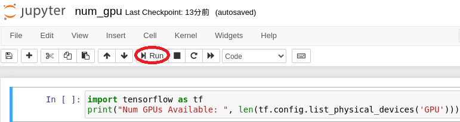
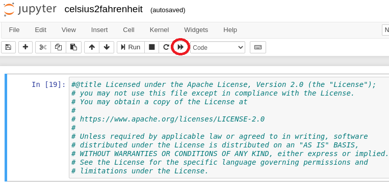
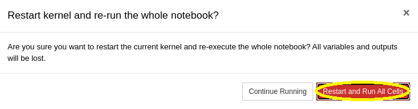

Oracle Cloud Infrastructure（以降OCIと記載）は、GPUを搭載するVMやベアメタルの様々なシェイプが用意されており、自身の機械学習ニーズに合った機械学習環境を構築するには最適なクラウドサービスです。
このチュートリアルは、OCIのマーケットプレイスから利用可能な機械学習環境構築のためのイメージを利用し、以下構成の典型的な機械学習環境を構築、TensorFlowを利用するサンプル機械学習プログラムをJupiter Notebookから実行します。
- 選択可能な機械学習環境GPUシェイプ
- VM.GPU2.1 (NVIDIA Tesla P100 16 GB)
- BM.GPU2.2 (NVIDIA Tesla P100 16 GB)
- VM.GPU3.1 (NVIDIA Tesla V100 16 GB)
- VM.GPU3.2 (NVIDIA Tesla V100 16 GB)
- VM.GPU3.4 (NVIDIA Tesla V100 16 GB)
- BM.GPU3.8 (NVIDIA Tesla V100 16 GB)
- BM.GPU4.8 (NVIDIA A100 40 GB)
※：シェイプ詳細は、以下URLを参照。 https://docs.oracle.com/ja-jp/iaas/Content/Compute/References/computeshapes.htm
- 利用可能な機械学習関連ソフトウェア
- TensorFlow
- Keras
- NumPy
- PyTorch
- Matplotlib
- Jupyter Notebook
- and more （※）
※：全リストは、 4. 機械学習関連インストール済みソフトウェア確認 を参照下さい。

この機械学習環境構築用イメージを利用すると、環境構築直後から機械学習に必要な様々なツールを利用し機械学習プログラムをGPU上で高速に実行することが可能になります。
所要時間 : 約30分
前提条件 : 機械学習環境を構築するインスタンスを収容するコンパートメント(ルート・コンパートメントでもOKです)の作成と、このコンパートメントに対する必要なリソース管理権限がユーザーに付与されていること。
注意1 : 現在、一時的に無償トライアル環境でのGPUインスタンスの利用を制限させて頂いています。そのため、現在このチュートリアルの手順を実施するには、商用のOCI契約が必要になります。
注意2 : チュートリアル内の画面ショットについては、OCIの現在のコンソール画面と異なっている場合があります。また使用する機械学習環境構築用イメージのバージョンが異なる場合も、チュートリアル内の画面ショットが異なる場合があります。
1. GPUインスタンスの起動
本章は、マーケットプレースから提供する機械学習環境構築用イメージを元に、GPUインスタンスを起動します。このチュートリアルで使用する機械学習環境構築用イメージは、バージョン4 (2021/1/29)です。なお、この機械学習環境構築用イメージは、いわゆるOCIのカスタムイメージです。
本チュートリアルは、GPUインスタンスにNVIDIA Tesla V100 16 GBを1枚搭載するVMシェイプのVM.GPU3.1を使用します。
-
以下マーケット・プレースの機械学習環境構築用イメージページにアクセスします。
-
OCIコンソールへのログイン画面が表示された場合（まだログインしていない場合）、ログインを完了します。
-
表示される以下画面の右上で、バージョン を 4 (2021/1/29) に指定、コンパートメント をGPUインスタンスを構築するコンパートメントに指定、使用許諾 チェックボックスをチェックし、 インスタンスの起動 ボタンをクリックします。

-
表示される以下 コンピュート・インスタンスの作成 画面で、以下の情報を入力し 作成 ボタンをクリックします。なお、ここに記載のないフィールドは、デフォルトのままとします。
4.0 GPUインスタンス名称・コンパートメント フィールド
- 名前 : GPUインスタンスに付与する名前
- コンパートメントに作成 : GPUインスタンスを構築するコンパートメント

4.1 配置 フィールド
- 可用性ドメイン : GPUインスタンスを構築する可用性ドメイン

4.2 イメージとシェイプ フィールド
- Shape : VM.GPU3.1 (Change Shape ボタンをクリックして表示される すべてのシェイプの参照 サイドバーから選択）

4.3 以下画面の すべてのシェイプの参照 サイドバーで以下をの情報を入力し、下部の シェイプの選択 ボタンをクリックします。
- インスタンス・タイプ : 仮想マシン
- シェイプ・シリーズ : 専門と前世代
- Shape Name : VM.GPU3.1
- 次のドキュメントを確認した上でこれに同意します。 : 選択

4.4 ネットワーキング フィールド
- プライマリ・ネットワーク : 新規仮想クラウド・ネットワークの作成
-
コンパートメントに作成 : GPUインスタンスを構築するコンパートメント

4.5 SSHキーの追加 フィールド
- SSHキー : GPUインスタンスにログインする際使用するSSH秘密鍵に対応する公開鍵
- 公開鍵ファイルのアップロード（ 公開キー・ファイル(.pub)のアップロード ）と公開鍵のフィールドへの貼り付け（ 公開キーの貼付け ）が選択可能

-
表示される以下 作業リクエスト 画面で、左上のステータスが プロビジョニング中 と表示されれば、GPUインスタンスの構築が実施されています。

ステータスが 実行中 となれば、GPUインスタンスの構築が完了しています。
2. TenforFlow・Jupiter Notebook環境構築
本章は、デプロイされたGPUインスタンスにログインし、Jupiter Notebook環境を構築します。
-
GPUインスタンスログイン
先の 作業リクエスト 画面で、パブリックIPアドレス フィールドに表示されているGPUインスタンスのIPアドレスを使用し、SSHでGPUインスタンスにopcアカウントでインターネット経由ログインします。

このSSH接続では、GPUインスタンス構築時に指定したSSH公開鍵に対応する秘密鍵を使用します。
> ssh -i path_to_ssh_secret_key opc@123.456.789.123 -
Jupiter Notebookログインパスワード初期化
以下コマンドで、Jupiter Notebookにログインする際のパスワードを初期化します。
> ~/mlenv/bin/jupyter notebook password Enter password: xxxxxxxx Verify password: xxxxxxxx [NotebookPasswordApp] Wrote hashed password to /home/opc/.jupyter/jupyter_notebook_config.json -
Jupiter Notebook起動時設定ファイル作成
Jupiter Notebookの起動時設定ファイルを、以下のように作成します。
> cat ~/.jupyter/jupyter_notebook_config.py c.NotebookApp.ip = '127.0.0.1'この設定は、ブラウザからJupiter Notebookにアクセスするクライアントを、GPUインスタンス自身に限定し、SSHポートフォワード経由の利用を想定しています。
-
CUDAバージョン10.1インストール
アカウントをrootに変更して以下コマンドを実行し、インストールされているTensorflow バージョン2.2が参照するCUDAバージョン10.1を、既にインストールされているバージョン10.2に追加でインストールします。
> yum install -y cuda-10-1.x86_64 -
Jupyter Notebookのsystemdへの登録
Jupyter Notebookをsystemdに登録するための設定ファイルを、以下のように作成します。
> cat /etc/systemd/system/notebook.service [Unit] Description=Jupyter Notebook [Service] Type=simple PIDFile=/var/run/jupyter-notebook.pid ExecStart=/home/opc/mlenv/bin/jupyter notebook WorkingDirectory=/home/opc/ User=opc Group=opc Restart=always [Install] WantedBy=multi-user.target -
Jupiter Notebook起動
以下コマンドで、Jupiter Notebookを起動します。
> systemctl daemon-reload > systemctl start notebook > systemctl status notebook ● notebook.service - Jupyter Notebook Loaded: loaded (/etc/systemd/system/notebook.service; enabled; vendor preset: disabled) Active: active (running) since Wed 2022-04-13 06:58:14 GMT; 7min ago Main PID: 25734 (jupyter-noteboo) Tasks: 1 Memory: 58.3M CGroup: /system.slice/notebook.service └─25734 /home/opc/mlenv/bin/python3 /home/opc/mlenv/bin/jupyter-notebook Apr 13 06:58:14 instance-20220413-1425 systemd[1]: Started Jupyter Notebook. Apr 13 06:58:14 instance-20220413-1425 jupyter[25734]: [I 06:58:14.678 NotebookApp] Writing notebook...et Apr 13 06:58:15 instance-20220413-1425 jupyter[25734]: [I 06:58:15.608 NotebookApp] JupyterLab exten...ab Apr 13 06:58:15 instance-20220413-1425 jupyter[25734]: [I 06:58:15.608 NotebookApp] JupyterLab appli...ab Apr 13 06:58:15 instance-20220413-1425 jupyter[25734]: [I 06:58:15.611 NotebookApp] Serving notebook...pc Apr 13 06:58:15 instance-20220413-1425 jupyter[25734]: [I 06:58:15.611 NotebookApp] The Jupyter Note...t: Apr 13 06:58:15 instance-20220413-1425 jupyter[25734]: [I 06:58:15.611 NotebookApp] http://127.0.0.1...8/ Apr 13 06:58:15 instance-20220413-1425 jupyter[25734]: [I 06:58:15.611 NotebookApp] Use Control-C to...). Apr 13 06:58:15 instance-20220413-1425 jupyter[25734]: [W 06:58:15.617 NotebookApp] No web browser f...r. Hint: Some lines were ellipsized, use -l to show in full. > systemctl enable notebook Created symlink from /etc/systemd/system/multi-user.target.wants/notebook.service to /etc/systemd/system/notebook.service. > systemctl is-enabled notebook enabled
3. TenforFlow・Jupiter Notebook稼働確認
本章は、TensorFlowが認識するGPUカードの枚数を確認するプログラムを実行し、TensorFlowとJupiter Notebookの稼働を確認します。
-
稼働確認プログラムコピー
以下稼働確認プログラムを、GPUインスタンスのopcアカウントのホームディレクトリ直下にファイル名”num_gpu.ipynb”でコピーします。
{ "cells": [ { "cell_type": "code", "execution_count": null, "metadata": {}, "outputs": [], "source": [ "import tensorflow as tf\n", "print(\"Num GPUs Available: \", len(tf.config.list_physical_devices('GPU')))" ] } ], "metadata": { "kernelspec": { "display_name": "Python 3", "language": "python", "name": "python3" }, "language_info": { "codemirror_mode": { "name": "ipython", "version": 3 }, "file_extension": ".py", "mimetype": "text/x-python", "name": "python", "nbconvert_exporter": "python", "pygments_lexer": "ipython3", "version": "3.6.8" } }, "nbformat": 4, "nbformat_minor": 4 } -
SSHポートフォワード作成
構築したJupiter Notebookは、GPUインスタンスからのみアクセス可能になっています。
そこで、以下コマンドをJupiter Notebookにアクセスするブラウザを起動する端末で実行し、この端末の8888番ポートをGPUインスタンスの8888番ポートに転送するSSHポートフォワードを作成します。
> ssh -i path_to_ssh_secret_key -L 8888:127.0.0.1:8888 opc@123.456.789.123 -
Jupiter Notebookへのアクセス
ブラウザを起動し、アドレスに”127.0.0.1:8888”を指定してJupiter Notebookにアクセスし、表示される以下画面の Password フィールドに Jupiter Notebookログインパスワード初期化 で設定したパスワードを入力します。

-
稼働確認プログラム実行
以下ブラウザ画面に表示される、先にコピーした稼働確認プログラムをクリックします。

表示される以下ブラウザ画面の Run ボタンをクリックし、稼働確認プログラムを実行、”Num GPUs Available:”の値が使用するGPUシェイプに搭載されるGPU枚数に一致することを確認します。

4. Jupyter Notebookで機械学習プログラム実行
本章は、GPUインスタンスのJupyter Notebookにアクセスし、サンプル機械学習プログラムを実行してその動作を確認します。
-
サンプル機械学習プログラムコピー
以下サンプルプログラムを、GPUインスタンスのopcアカウントのホームディレクトリ直下にファイル名”celsious2fahrenheit.ipynb”でコピーします。
このプログラムは、既知の摂氏・華氏対応データからその変換式を学習し、未知の摂氏表記温度から対応する華氏を予測します。
{ "cells": [ { "cell_type": "code", "execution_count": 19, "metadata": {}, "outputs": [], "source": [ "#@title Licensed under the Apache License, Version 2.0 (the \"License\");\n", "# you may not use this file except in compliance with the License.\n", "# You may obtain a copy of the License at\n", "#\n", "# https://www.apache.org/licenses/LICENSE-2.0\n", "#\n", "# Unless required by applicable law or agreed to in writing, software\n", "# distributed under the License is distributed on an \"AS IS\" BASIS,\n", "# WITHOUT WARRANTIES OR CONDITIONS OF ANY KIND, either express or implied.\n", "# See the License for the specific language governing permissions and\n", "# limitations under the License." ] }, { "cell_type": "code", "execution_count": null, "metadata": {}, "outputs": [], "source": [ "import tensorflow as tf" ] }, { "cell_type": "code", "execution_count": null, "metadata": {}, "outputs": [], "source": [ "import numpy as np\n", "import logging\n", "logger = tf.get_logger()\n", "logger.setLevel(logging.ERROR)" ] }, { "cell_type": "code", "execution_count": null, "metadata": {}, "outputs": [], "source": [ "celsius_q = np.array([-40, -10, 0, 8, 15, 22, 38], dtype=float)\n", "fahrenheit_a = np.array([-40, 14, 32, 46, 59, 72, 100], dtype=float)\n", "\n", "for i,c in enumerate(celsius_q):\n", " print(\"{} degrees Celsius = {} degrees Fahrenheit\".format(c, fahrenheit_a[i]))" ] }, { "cell_type": "code", "execution_count": null, "metadata": {}, "outputs": [], "source": [ "l0 = tf.keras.layers.Dense(units=1, input_shape=[1])" ] }, { "cell_type": "code", "execution_count": null, "metadata": {}, "outputs": [], "source": [ "model = tf.keras.Sequential([l0])" ] }, { "cell_type": "code", "execution_count": null, "metadata": {}, "outputs": [], "source": [ "model.compile(loss='mean_squared_error',\n", " optimizer=tf.keras.optimizers.Adam(0.1))" ] }, { "cell_type": "code", "execution_count": null, "metadata": {}, "outputs": [], "source": [ "history = model.fit(celsius_q, fahrenheit_a, epochs=500, verbose=False)\n", "print(\"Finished training the model\")" ] }, { "cell_type": "code", "execution_count": null, "metadata": {}, "outputs": [], "source": [ "import matplotlib.pyplot as plt\n", "plt.xlabel('Epoch Number')\n", "plt.ylabel(\"Loss Magnitude\")\n", "plt.plot(history.history['loss'])" ] }, { "cell_type": "code", "execution_count": null, "metadata": {}, "outputs": [], "source": [ "print(model.predict([100.0]))" ] } ], "metadata": { "kernelspec": { "display_name": "Python 3", "language": "python", "name": "python3" }, "language_info": { "codemirror_mode": { "name": "ipython", "version": 3 }, "file_extension": ".py", "mimetype": "text/x-python", "name": "python", "nbconvert_exporter": "python", "pygments_lexer": "ipython3", "version": "3.6.8" } }, "nbformat": 4, "nbformat_minor": 4 } -
サンプルプログラム実行
Jupiter Notebookにログインした直後のブラウザ画面をリロードし、以下画面に表示される、先にコピーしたサンプル機械学習プログラムをクリックします。

表示される以下ブラウザ画面の restart the kernel, then re-run the whole notebook ボタンをクリックします。

表示される以下ブラウザ画面の Restart and Run All Cells ボタンをクリックし、サンプルプログラムを実行します。

実行した結果が表示される以下ブラウザ画面で、100度（摂氏）に対応する華氏の予測値が変換式（f=1.8c+32）から計算される212度（華氏）に近い値であることを確認します。

5. 機械学習関連インストール済みソフトウェア確認
本章は、以下コマンドをGPUインスタンスのopcアカウントで実行し、GPUインスタンスに予めインストールされている、機械学習関連ソフトウェアとそのバージョンを確認します。
> source mlenv/bin/activate
(mlenv) > pip3 list
Package Version
---------------------- -----------
absl-py 0.9.0
astunparse 1.6.3
attrs 19.3.0
backcall 0.1.0
bleach 3.1.5
cachetools 4.1.0
certifi 2020.4.5.1
chardet 3.0.4
cycler 0.10.0
decorator 4.4.2
defusedxml 0.6.0
entrypoints 0.3
future 0.18.2
gast 0.3.3
google-auth 1.16.1
google-auth-oauthlib 0.4.1
google-pasta 0.2.0
gpuutils 0.0.2
graphviz 0.8.4
grpcio 1.29.0
h5py 2.10.0
idna 2.9
imageio 2.8.0
importlib-metadata 1.6.0
ipykernel 5.3.0
ipython 7.15.0
ipython-genutils 0.2.0
ipywidgets 7.5.1
jedi 0.17.0
Jinja2 2.11.2
joblib 0.15.1
json5 0.9.5
jsonschema 3.2.0
jupyter 1.0.0
jupyter-client 6.1.3
jupyter-console 6.1.0
jupyter-core 4.6.3
jupyterlab 2.1.4
jupyterlab-server 1.1.5
Keras 2.3.1
Keras-Applications 1.0.8
keras-mxnet 2.2.4.2
Keras-Preprocessing 1.1.2
kiwisolver 1.2.0
Markdown 3.2.2
MarkupSafe 1.1.1
matplotlib 3.2.1
mistune 0.8.4
mxnet-cu102 1.6.0
nbconvert 5.6.1
nbformat 5.0.6
notebook 6.0.3
numpy 1.18.5
oauthlib 3.1.0
opt-einsum 3.2.1
packaging 20.4
pandas 1.0.4
pandocfilters 1.4.2
parso 0.7.0
pexpect 4.8.0
pickleshare 0.7.5
Pillow 7.1.2
pip 20.1.1
prometheus-client 0.8.0
prompt-toolkit 3.0.5
protobuf 3.12.2
ptyprocess 0.6.0
pyasn1 0.4.8
pyasn1-modules 0.2.8
Pygments 2.6.1
pyparsing 2.4.7
pyrsistent 0.16.0
python-dateutil 2.8.1
pytz 2020.1
PyYAML 5.3.1
pyzmq 19.0.1
qtconsole 4.7.4
QtPy 1.9.0
requests 2.23.0
requests-oauthlib 1.3.0
rsa 4.0
scikit-learn 0.23.1
scipy 1.4.1
seaborn 0.10.1
Send2Trash 1.5.0
setuptools 47.1.1
six 1.15.0
tensorboard 2.2.2
tensorboard-plugin-wit 1.6.0.post3
tensorflow 2.2.0
tensorflow-estimator 2.2.0
termcolor 1.1.0
terminado 0.8.3
testpath 0.4.4
tf-keras-vis 0.3.1
threadpoolctl 2.1.0
torch 1.5.0
torchvision 0.6.0
tornado 6.0.4
traitlets 4.3.3
urllib3 1.25.9
wcwidth 0.2.3
webencodings 0.5.1
Werkzeug 1.0.1
wheel 0.34.2
widgetsnbextension 3.5.1
wrapt 1.12.1
zipp 3.1.0
これで、このチュートリアルは終了です。